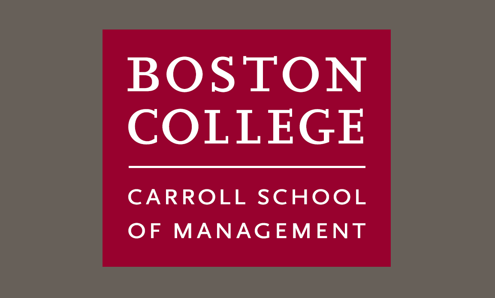

Carroll School of Management | ||
|---|---|---|
|  | ||
| Most Popular Major = Finance | 2nd Most Popular Major = Accounting | 3rd Most Popular Major = Marketing |
FinanceRigorous training, innovative research, and access to preeminent faculty highlight our department, which is consistently ranked among the top 15 in the country by U.S. News & World Report. Our dynamic curriculum prepares students to meet quantitative and analytical challenges in both the business and academic fields. We host a weekly seminar series where internationally renowned scholars address emerging trends in the field—providing an engaging forum for students, faculty, and practitioners. Faculty and alumni advise students and connect them to professionals in financial institutions, manufacturing firms, service firms, nonprofit organizations, and government agencies. |
AccountingThe Accounting Department educates students to manage, thrive, and lead in various careers at both intermediate and long-term horizons. We educate undergraduate and graduate students who plan to take the Certified Public Accountant (CPA) examination and typically begin their careers with one of the prominent public accounting firms. Many of our graduates achieve promotion to partner, and many others leverage their work in public accounting to launch successful careers in other fields ranging from corporate finance and investor relations positions to numerous and varied roles such as consulting, public service, banking, and many others. We also train students who will not be accountants but will benefit immensely from understanding financial statements and the overall financial reporting environment. We offer three different concentrations (Accounting for CPAs, Accounting for Finance and Consulting, and Accounting & Information Systems) and two minors. Our objective is to prepare all students at every level to excel by focusing on the fundamentals of informed and ethical decision-making in the accounting profession. Accessibility to expert faculty teaching in addition to our collaborative environment is a crucial element of the success of students who take our courses. |
MarketingThis highly dynamic discipline thrives on change—change in customer attitudes, economies, demographics, industries, technology, society, and culture. It’s the driving force in sustaining meaningful and valuable customer relationships, developing new markets, building distinguished brands, and creating successful public and private enterprises. Our Marketing Department prepares students with the knowledge, skills and tools to make smart strategic decisions in a rapidly changing marketplace. Our award-winning faculty are recognized leaders in their fields who publish extensively in top journals—including the Journal of Marketing Research, the Journal of Consumer Research, and Marketing Science. Faculty supplement core readings with case studies and expose students to the latest marketing software programs and tools. With teaching and research directed at both academic and managerial audiences, students are primed to pursue careers in retail, sales, consumer products, advertising, brand management or consulting, product management, media/entertainment, or their own entrepreneurial ventures. |